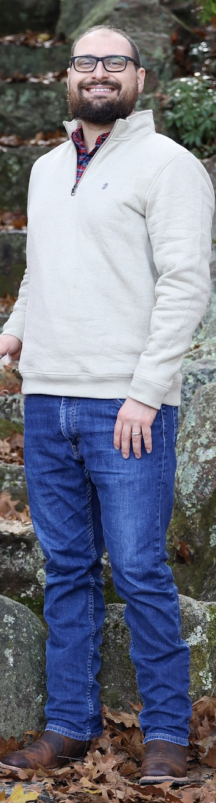

About Me:
Hi, I'm Joshua Wisowaty. Academically trained in engineering and professionally trained in digital photography. I strive to bring my clients Visual Engineering Reimagined through the synergy of art and science.
With an unrelenting passion and a decade of experience, I specialize in capturing headshots/portraits, residential/commercial design, interior design, product design, and more in the best presentation possible to tell your story.
My camera can be tethered to an iPad Pro so that everything I shoot can be seen in real-time for client satisfaction.
Education:
- Graduate of Digital Photography by Villiers Steyn
- Photoshop MasterClass
- Shutterfly Portrait Expert
- Biotech and Nanotech Engineering - Penn State University
Gear:
- Canon EOS R6 Full-Frame Mirrorless 4K Camera
- Canon RF 14mm-35mm f4L
- Canon RF 50mm f1.8 STM
- Canon RF 24mm-105mm f4-7.1
- Canon RF 100mm f/2.8L Macro IS USM
- Ricoh Theta V 4K 360-degree camera
- DJI Ronin-SC gimbal stabilizer